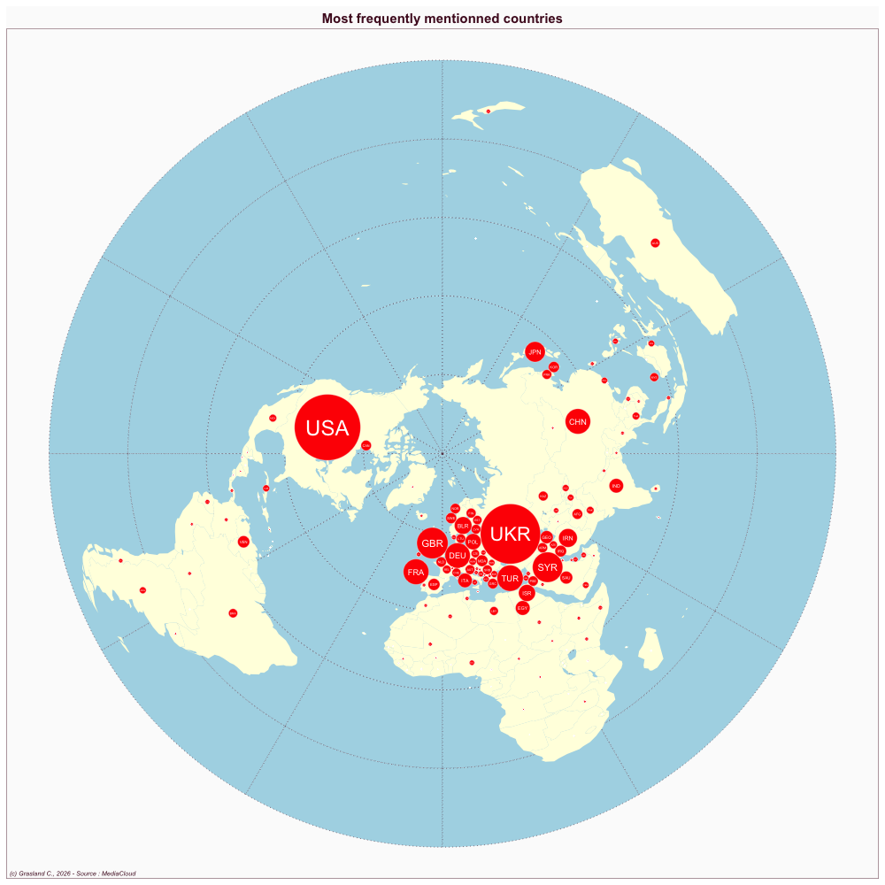

Russia
- Website : Nezavizimaya Gazeta
Scale
- Global
- National
Topics
- General news
- Political news
- Economic news
Publications
Pelevina JA. 2018. Media coverage of international terrorism at the leading russian and french newspapers during 2015-2016. Communications. Media. Design 3: 38–57